terminal
mind-box
desktop
f-going
contact
transition
nvg system
the terminal serves as the main control point for the neurointerface. here, users can configure session parameters, select memories for playback or analysis. its minimalist design with touch panels ensures intuitive interaction with the system.
this is the core of the system, where all data received through the neurointerface is stored. the storage uses advanced encryption and compression algorithms to ensure the security and integrity of memories. visually, it resembles a dynamic network of glowing threads, symbolizing neural connections.
a high-performance computing module that processes data in real time. It converts neural impulses into digital signals and vice versa, enabling seamless memory playback. its design combines functionality and aesthetics, reflecting the high-tech essence of the project.
this element connects the capsules, allowing the user's consciousness to move between different memory sections. the tunnel is visualized as a luminous corridor with a motion effect, creating a sense of traveling through time and space.
the area where the user connects to the neurointerface. the contact zone is equipped with sensors that read brain activity and transmit it to the system. Its ergonomic design ensures comfort and full immersion in the process.
an interactive display that shows the system’s current status and visualizes memories. It can project both abstract imagery and specific scenes from the past, adapting to the user’s requests.
allows users to navigate the memory space and control playback. It includes voice commands, gestures, and the neurointerface for the most natural interaction possible. The system’s interface is intuitive and seamlessly integrated into the capsule’s overall design.
 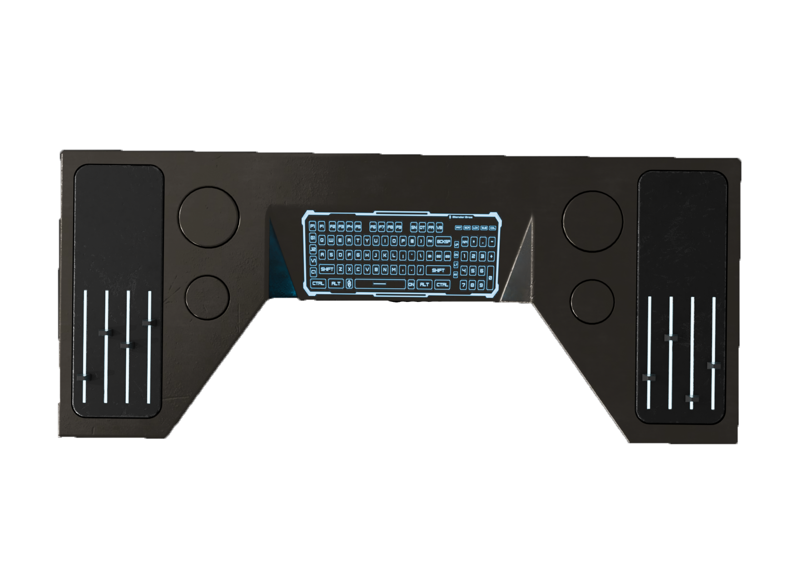
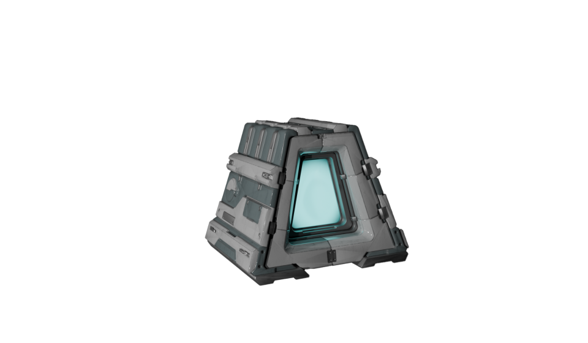
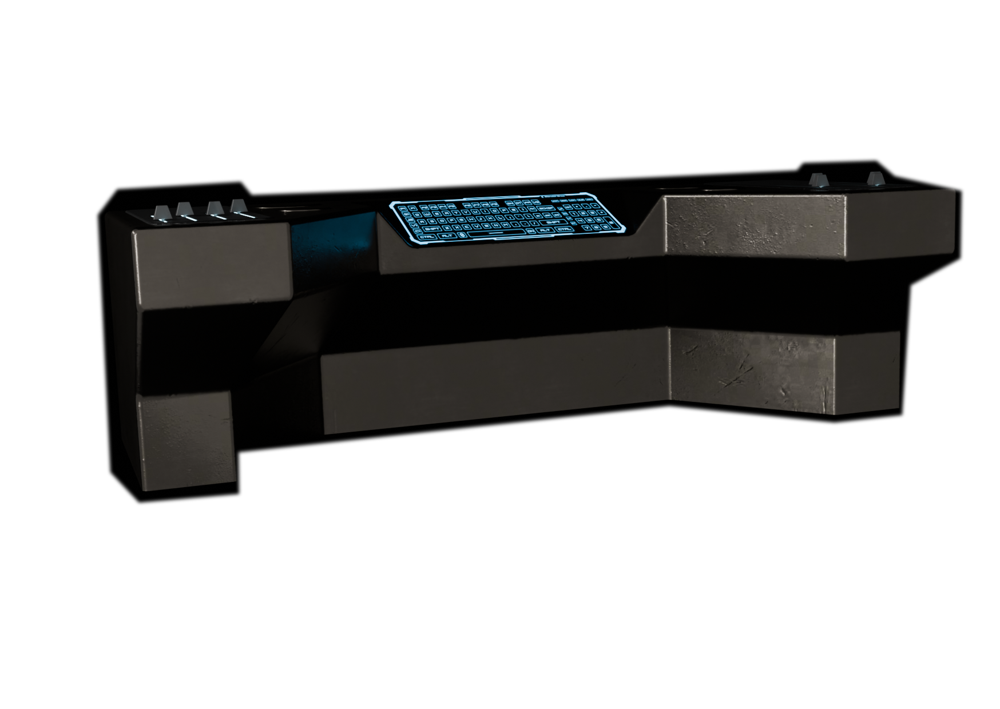
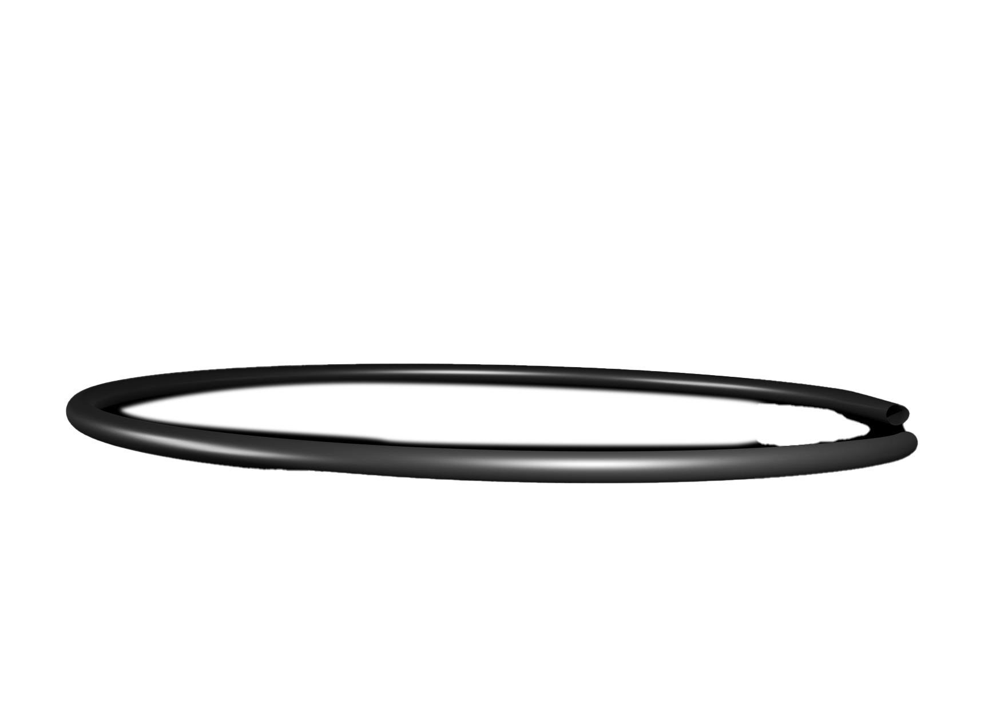
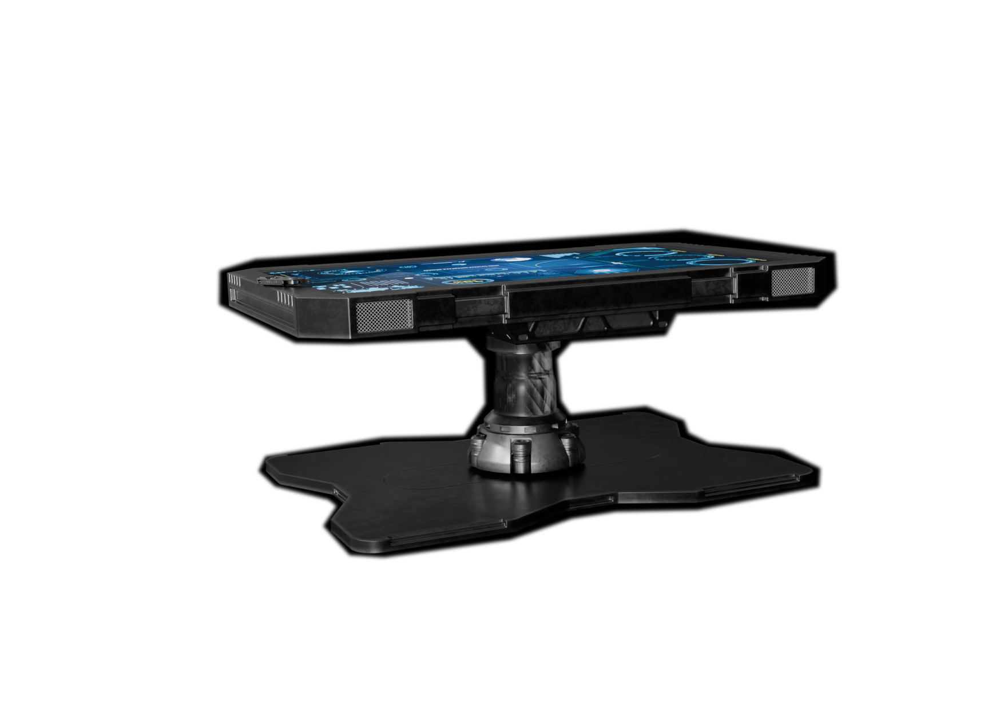
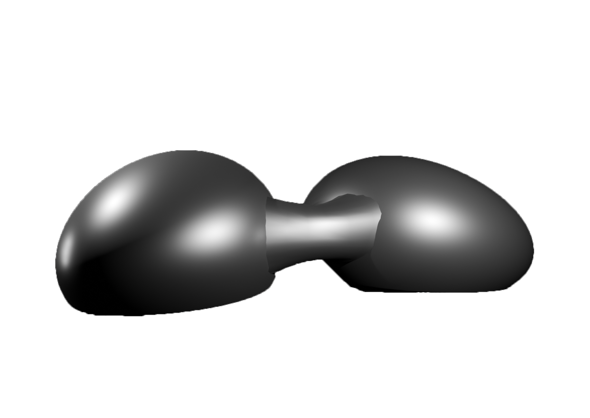
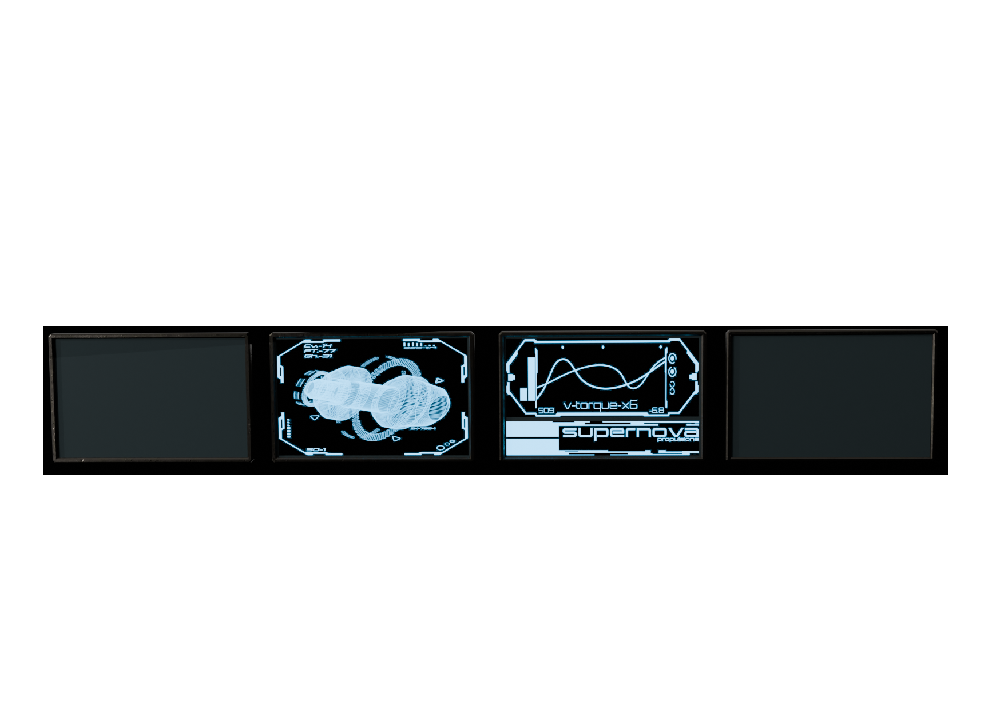
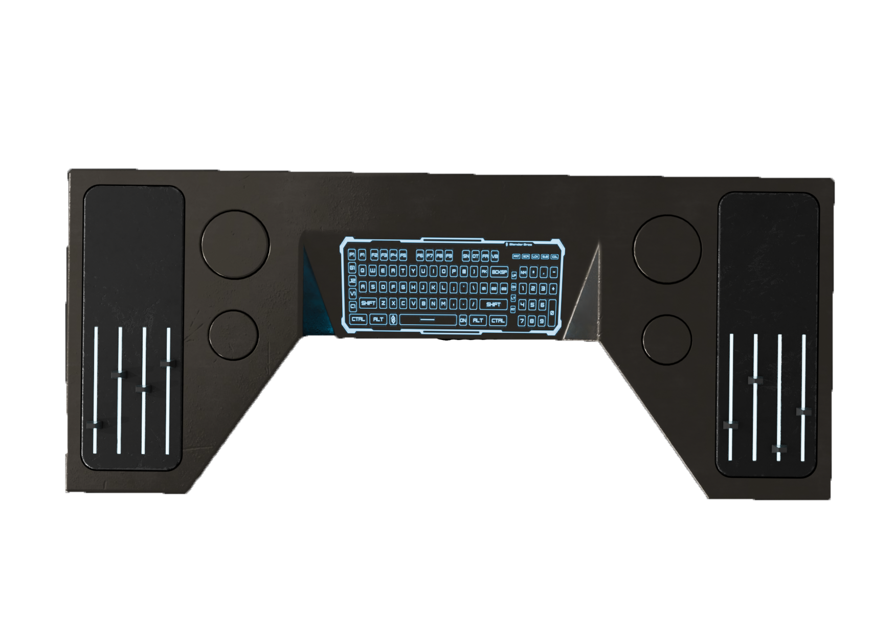
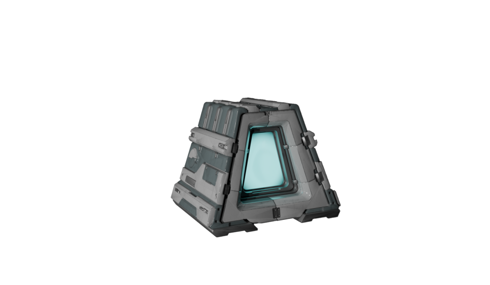
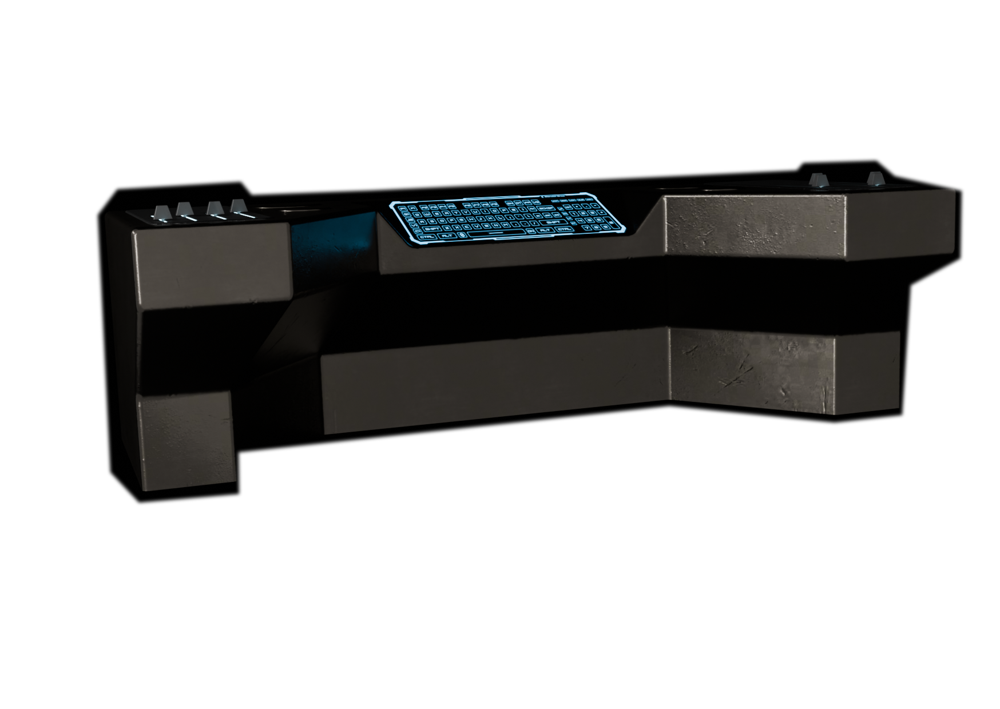
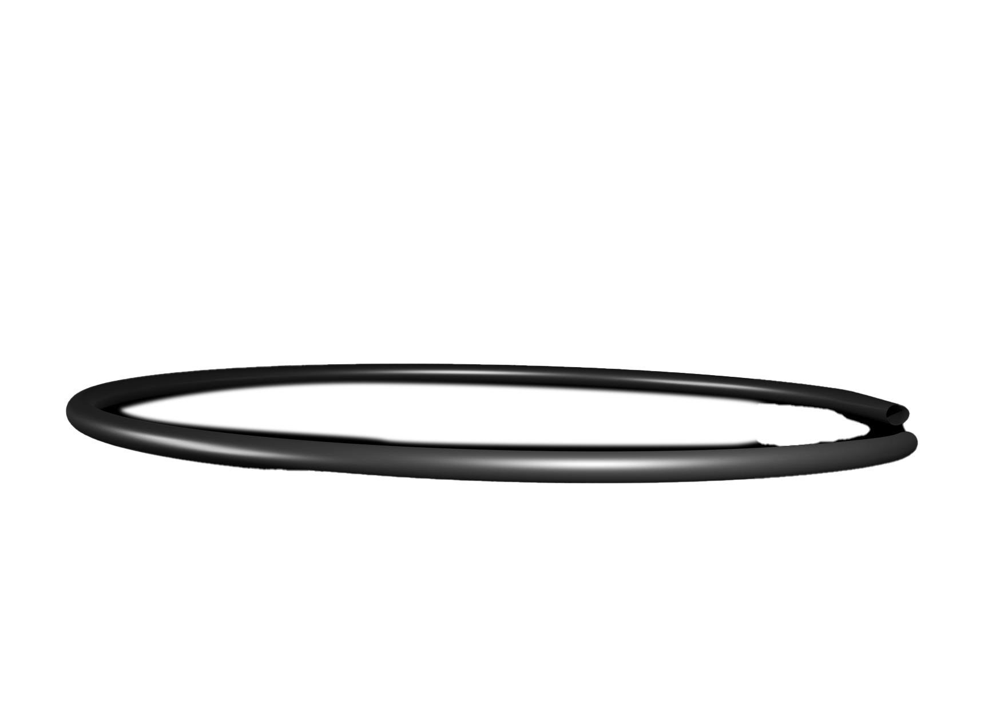
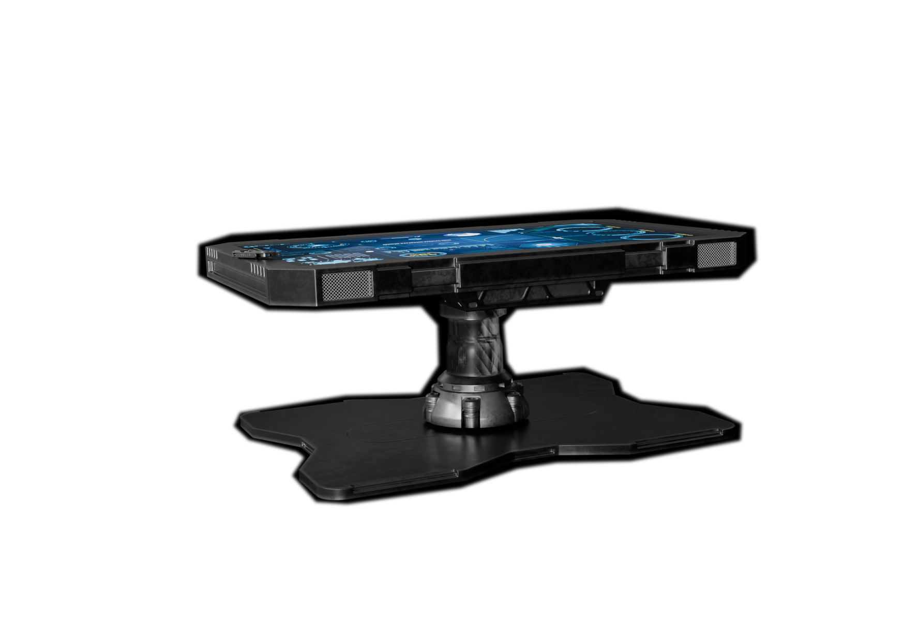
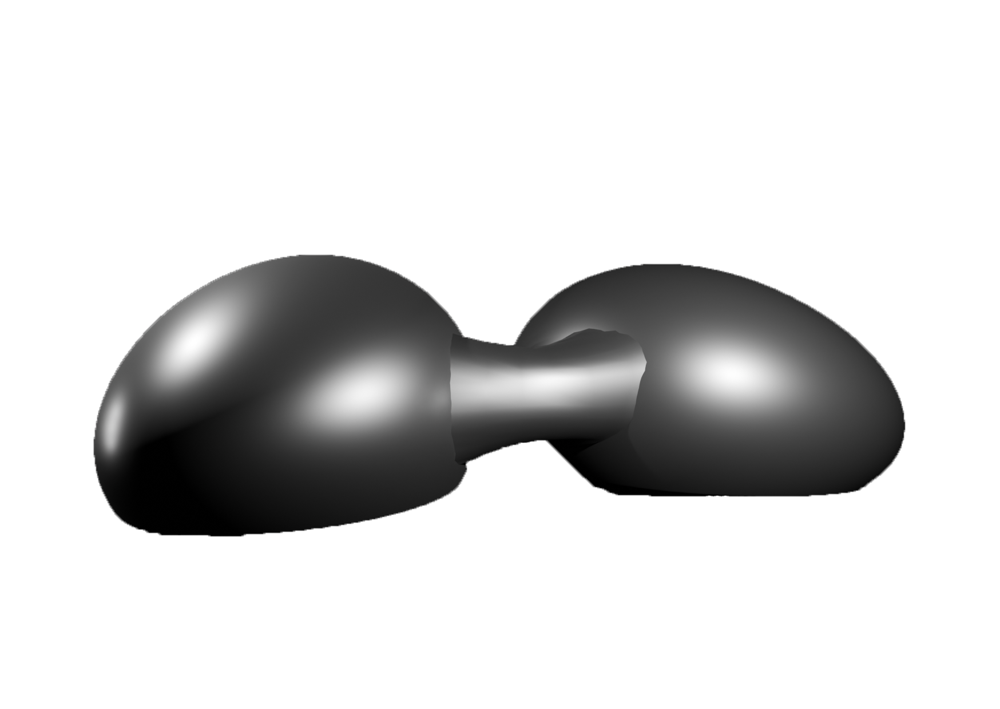
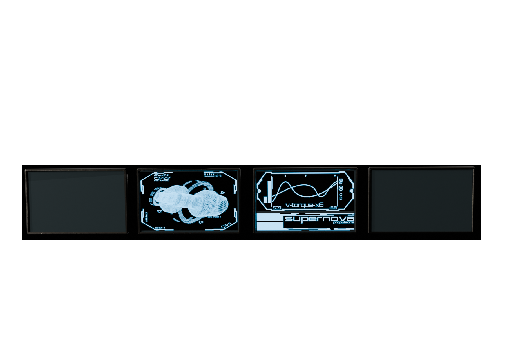